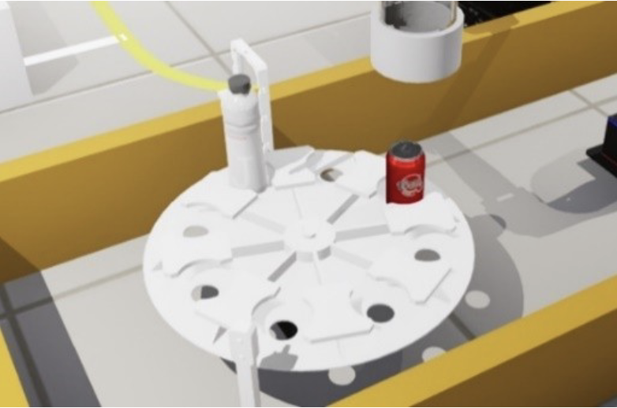
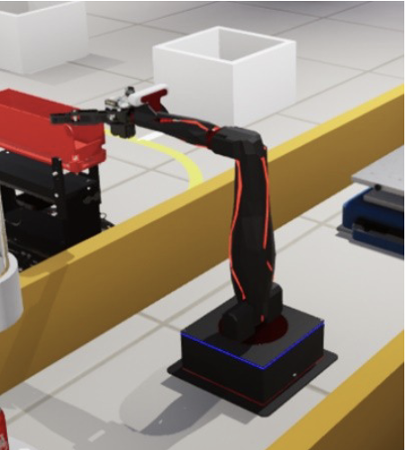
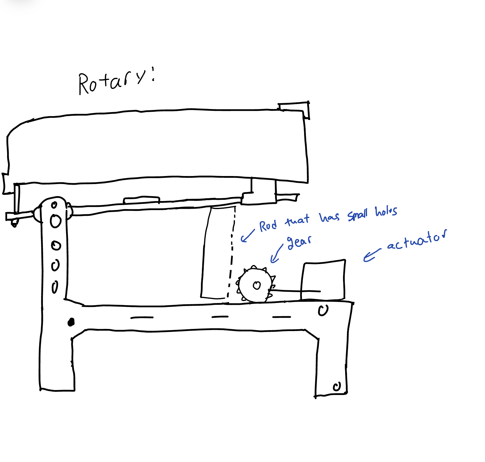
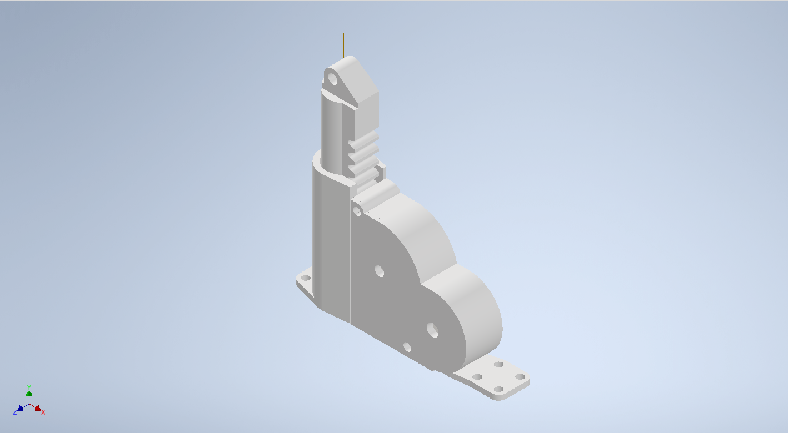

Brief Overview:
The task is to design a system for sorting and recycling containers based on their material (metal, paper, or clear plastic). The system comprises a Sorting Station with a servo-controlled turntable for receiving containers from a chute, and a Recycling Station. Components include solid models of the Q-bot, containers for recycling, fasteners, and an actuator for controlling motion. The objective is to create an efficient mechanism for sorting and depositing containers into the appropriate recycling streams, contributing to waste management and sustainability goals. Refer to images below.
  Figure 1 - Recycling StationProject Contributions:
In our project team, the Modeling Sub-Team played a pivotal role in designing the mechanism responsible for depositing containers into the recycling bins. Our contributions were focused on creating and refining the initial concept sketches for this mechanism, ensuring it met all project requirements and specifications. One of our key decisions was selecting a rotary motor as the actuator to control the motion of the mechanism. This choice was made after careful consideration of project needs and the provided solid models of various actuators. We evaluated both rotary and linear options before settling on the rotary motor, which we believed would offer the necessary precision and control for our application.
Once the actuator was chosen, we delved into creating concept sketches individually. Each team member brought forward their ideas, considering factors like how the mechanism would connect to the baseplate, actuator, and connecting plate of the hopper. We then came together to discuss the strengths and weaknesses of each concept, ultimately converging on a finalized design that we believed would best meet the project objectives. With the concept in place, we transitioned to modeling and assembly using Autodesk Inventor. This phase required careful attention to detail to ensure proper constraint and alignment with the provided components. We iterated on the design, making adjustments as needed to optimize functionality and reliability. Refer to the photos below:
 Figure 2 - sketches
Figure 2 - sketches
With the concept in place, we transitioned to modeling and assembly using Autodesk Inventor. This phase required careful attention to detail to ensure proper constraint and alignment with the provided components. We iterated on the design, making adjustments as needed to optimize functionality and reliability.
 Figure 3 - Mechanismwe diligently worked on creating fully-dimensioned engineering drawings of our components, following ANSI standards. These drawings serve as crucial documentation for fabrication and assembly, providing clear guidance for implementation. Here are some of the drawings that were done by me. Refer to the photos below:


 Figure 4 - Engineering Drawings
Figure 4 - Engineering Drawings
Overall, our contributions as the Modeling Sub-Team were essential to the success of the project. By designing a robust and efficient mechanism for container deposition, we helped advance our team towards our goal of creating a sustainable and effective sorting and recycling system.
Reflections:
Engaging in a reflective dialogue about my involvement in Project Three, particularly within the Modeling Sub-Team, prompts a thoughtful examination of my contributions to the design of the container-depositing mechanism. As we progress, my focus shifts towards optimizing our initial concept sketches to meet the project's requirements. I ponder, "How can we refine our designs to ensure seamless integration with the baseplate, actuator, and connecting plate?" This line of inquiry drives our team discussions and leads to the development of a finalized design that balances functionality and practicality.
Throughout the modeling and assembly phase using Autodesk Inventor, I continually evaluate the efficiency and correctness of our approach. "Are we properly constraining the components to guarantee stability and reliability?" This ongoing reflection highlights my commitment to meticulous attention to detail and my dedication to producing high-quality work.
In conclusion, my participation in the Modeling Sub-Team not only deepened my understanding of mechanical design principles but also emphasized the significance of critical thinking and collaboration in achieving project objectives. Through continuous reflection and refinement, I remain committed to contributing to the success of our team's endeavors.